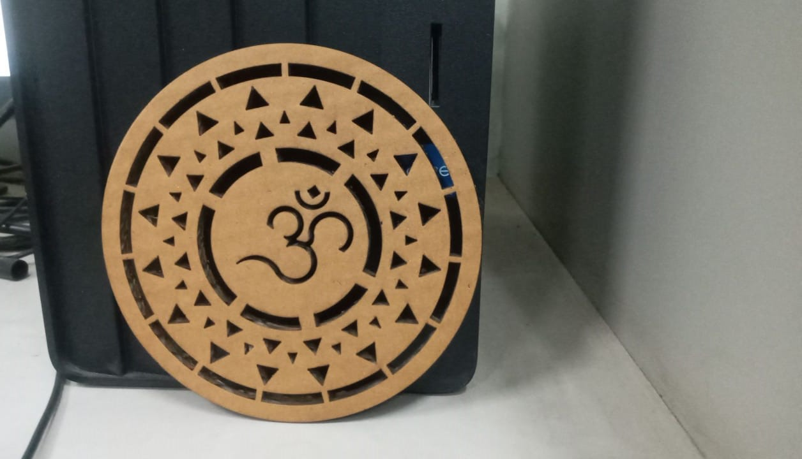
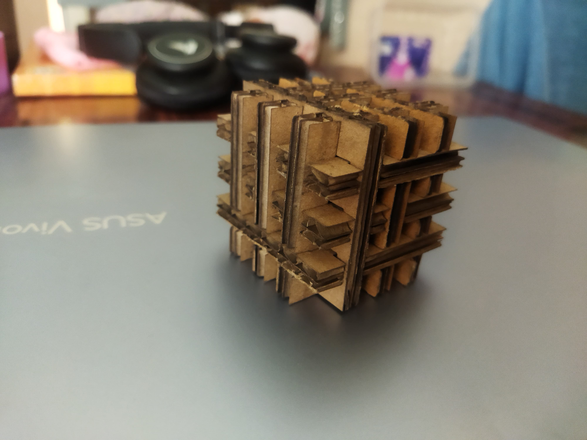
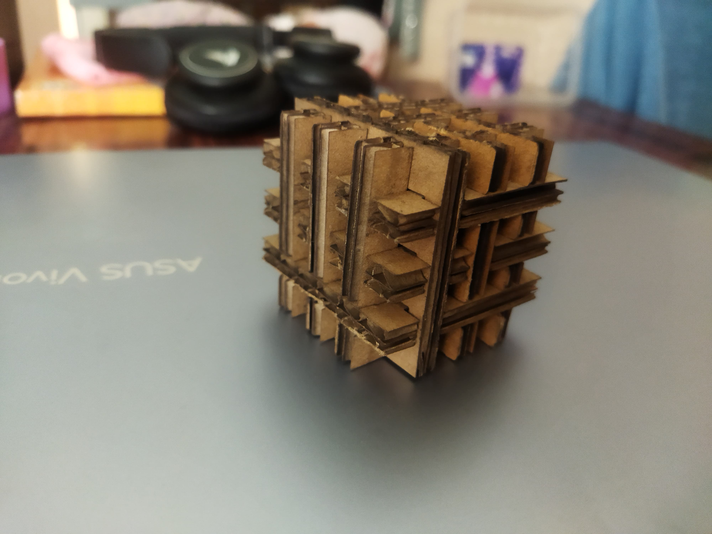

The third module of our fablab was of computer controlled cutting which includes understanding of designing softwares like AutoCad, Fusion 360 and Laser-Cad
- Characterize your lasercutter's focus, power, speed, rate, kerf, and joint clearance
- Document your work (individually or in group)
- Design, lasercut, and document a parametric press-fit construction kit, which can be assembled in multiple ways. Account for the lasercutter kerf.
- Cut something on the vinylcutter
Objectives
Group assignments
Individual assignments
- Demonstrate and describe parametric 2D modelling processes.
- Identify and explain processes involved in using the laser cutter.
- Identify and explain processes involved in using the vinyl cutter.
Learning Objectives
About Laser
Laser stand for Light amplification by stimulated emission of radiation.when atoms of active system of laser medium absorbed energy goes to the excited energy state , after completation of life time it jumped from higher energy level to the ground energy level.during this transition it emit photons by the process of stimulation emission.these photons get applied in resonator,emits Laser light which is highly coherent, monochromatic, intense and unidirection. In VA we are having CO2 laser which one the powerful laser among all the laser emit laser light in IR region(10.6µ).
About Laser Machine

Name: SIL Laser Engraving - Cutting Machine
Application: SIL Laser Engraving - Cutting Machine is versatile & finds application in signage, indoor & outdoor advertisement, art & craft, gift, shoes, toys, garments, model cutting, papers & packaging, wood & MDF cutting industry, interior, decorators and many more.
First Assignment
At the very first day,I was introduced to all the basic designing concepts.I got my Day-1 assignment to explore about Parametric Designs. It was some-kind Of hectic task for me but I managed to tackle it.
On the second day of Module, I had the exciting opportunity to create my own design and bring it to life using a laser cutter.
Laser-Cad
Laser-Cad is a computer software in which we can import our .Dxf or .Dwf file and give commands to Laser-Cutter as required. Once our modifications are over, we can download the file and file will be uploaded on the Laser-Cutter.

We can change the speed,power,etc of the laser in order to get our design cut properly. Specific matertials have the fixed value of speed and power. For Example- Cardboard 6.9mm(Speed=35mm/S and Power=60%).

Final Image

Second Assignment
On the third day of my laser cutting adventure, we make a cube puzzle. In this project,I made a parametric design in which I gave it various parameters like Glength,Gheight,etc. Aim of making parametric designs is that we can change it anytime according to our requirements with the help of parameters.
 

Final Assignment
For my next laser cutting assignment, I took on the challenge of creating a complex pressfit structure using mdf sheet. After some research, I decided to make a 20-min timer. This design required precision and careful planning, as each piece needed to fit together perfectly. To begin, I watched tutorials on YouTube to understand the construction of a timer.
While laser cutting this model, many mistakes were made due to which the parts of this model were not cut properly.